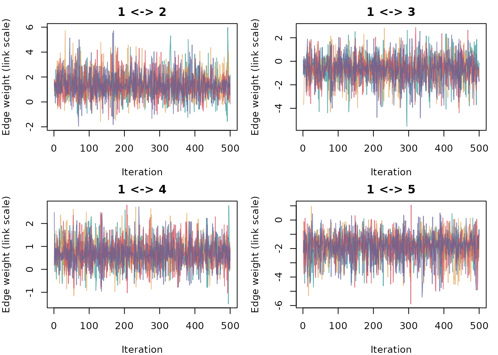
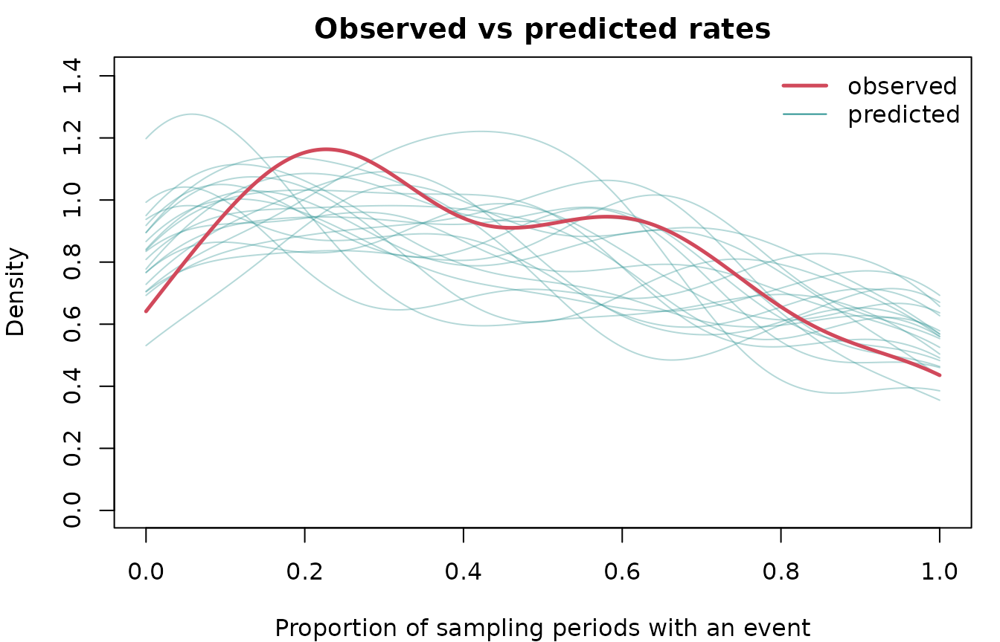
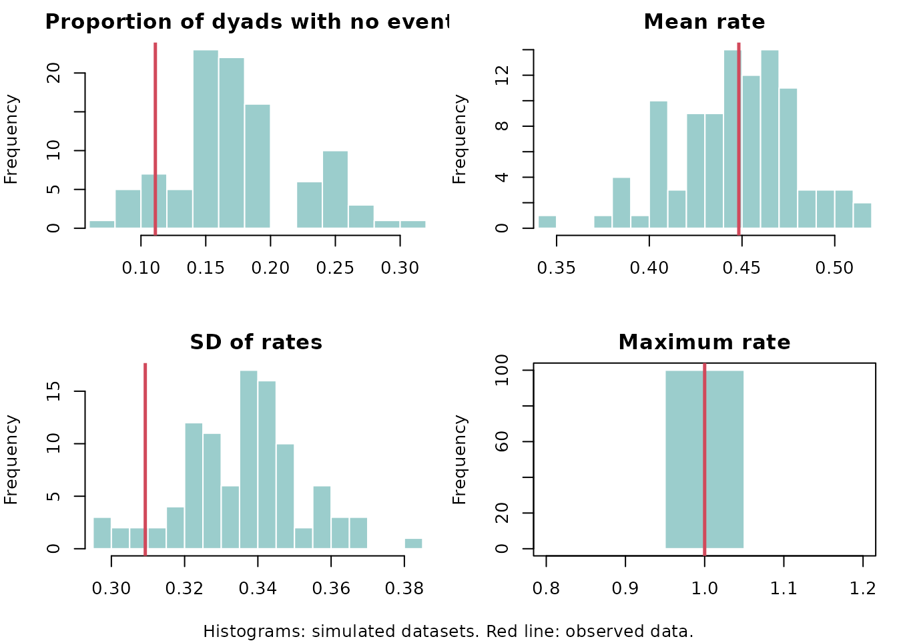
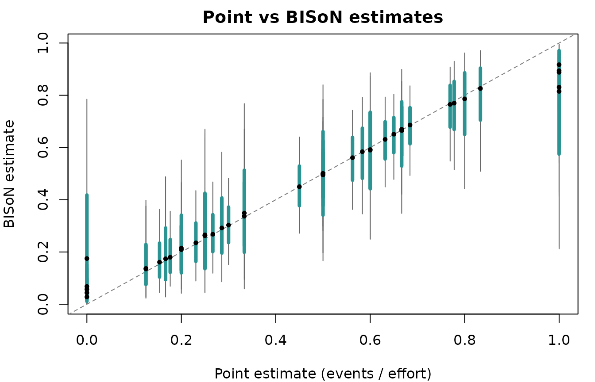
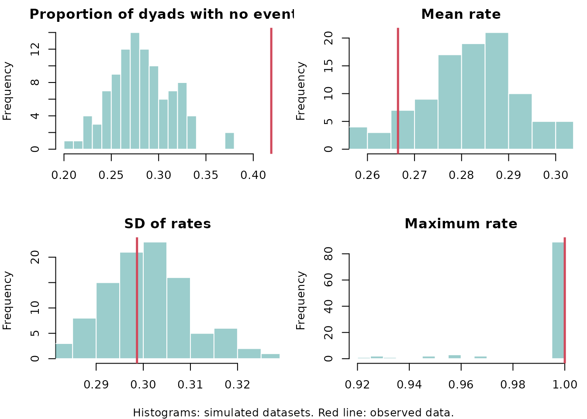
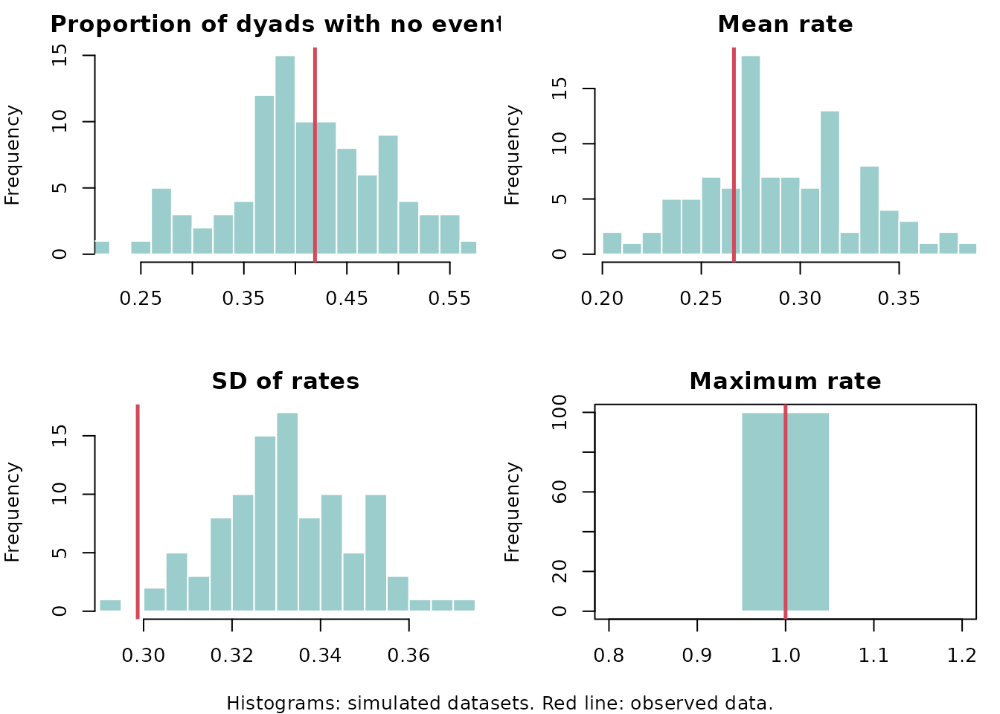

This article describes how to check a fitted edge weight model. There
are two kinds of check. MCMC diagnostics check whether the sampler
(Stan’s Markov chain Monte Carlo algorithm) has given a reliable sample
from the posterior, the distribution of plausible parameter values given
the data and priors. Posterior predictive checks compare data simulated
from the fitted model with the observed data, to find ways in which the
model does not describe the data. The last section works through an
example in which a posterior predictive check shows a problem with the
model. A basic analysis is described in
vignette("getting_started").
An example model
The examples use simulated aggregated data, with one row per dyad:
sim_data <- simulate_bison_model("binary", aggregated = TRUE, max_obs = 20)
df <- sim_data$df_sim
fit_edge <- bison_model(
(event | effort) ~ dyad(node_1_id, node_2_id),
data = df,
model_type = "binary",
priors = get_default_priors("binary"),
iter_sampling = 500,
seed = 1,
show_messages = FALSE
)seed and show_messages are passed on to
Stan’s sampler: seed makes the results reproducible and
show_messages = FALSE hides the progress messages.
MCMC diagnostics
Binary and count models are fitted with Stan’s MCMC sampler. Conjugate models calculate the posterior exactly, without MCMC, so they do not need these checks.
Stan warnings
After sampling, cmdstanr warns about any problems it has detected,
such as divergent transitions or iterations that reached the maximum
tree depth (a limit on how far the sampler moves in each step).
Divergent transitions mean that the sampler could not explore part of
the posterior, and the results may be biased. These warnings should not
be ignored. Possible responses include increasing
adapt_delta (for example adapt_delta = 0.95,
passed to bison_model()), changing the priors, or
simplifying the model.
The fitted cmdstanr object is stored in fit_edge$fit (it
is NULL for conjugate models). Its
diagnostic_summary() method gives, for each chain (an
independent run of the sampler), the number of divergent transitions,
the number of iterations at the maximum tree depth, and the E-BFMI, a
measure of how efficiently the sampler moved through the posterior:
fit_edge$fit$diagnostic_summary()
#> $num_divergent
#> [1] 0 0 0 0
#>
#> $num_max_treedepth
#> [1] 0 0 0 0
#>
#> $ebfmi
#> [1] 0.9548598 0.9456337 0.9817843 0.9982068Here there are no divergent transitions and no iterations at the maximum tree depth. E-BFMI values below about 0.3 indicate that the sampler explored the posterior inefficiently. All four values are well above this.
Trace plots
plot_trace() shows the chains for some of the edge
weights, on the link scale. The chains should overlap and show no trends
or long excursions:
plot_trace(fit_edge, par_ids = 1:4)
Only a few parameters can be inspected with trace plots. Some problems, such as a chain that stays stuck in one region, are easier to detect with numerical summaries.
R-hat and effective sample size
fit_edge$fit$summary() gives posterior summaries
together with R-hat and effective sample sizes (ESS) for any parameter
in the model:
edge_summary <- fit_edge$fit$summary("edge_weight")
head(edge_summary)
#> # A tibble: 6 × 10
#> variable mean median sd mad q5 q95 rhat ess_bulk ess_tail
#> <chr> <dbl> <dbl> <dbl> <dbl> <dbl> <dbl> <dbl> <dbl> <dbl>
#> 1 edge_weight[1] 1.38 1.30 1.10 1.06 -0.231 3.24 1.00 3509. 1314.
#> 2 edge_weight[2] -0.686 -0.622 1.18 1.07 -2.77 1.20 1.01 3222. 1528.
#> 3 edge_weight[3] 0.715 0.707 0.638 0.633 -0.317 1.76 1.00 3097. 1509.
#> 4 edge_weight[4] -1.92 -1.84 0.990 0.926 -3.75 -0.416 1.01 2774. 1209.
#> 5 edge_weight[5] -1.23 -1.18 0.637 0.600 -2.32 -0.263 1.00 2817. 1447.
#> 6 edge_weight[6] 0.387 0.374 0.941 0.924 -1.10 1.92 1.00 2619. 1421.R-hat compares the variation within and between chains, and should be
close to 1. A common threshold is 1.01. ess_bulk and
ess_tail estimate how many independent draws the sample is
equivalent to, for the centre and the tails of the distribution
respectively. Several hundred is usually enough for posterior medians
and 90% intervals. With many edges it is easier to look at the extremes
than at every row:
max(edge_summary$rhat)
#> [1] 1.011915
min(edge_summary$ess_bulk)
#> [1] 2164.591
min(edge_summary$ess_tail)
#> [1] 912.965In this model the largest R-hat is below 1.01, and the smallest bulk and tail ESS are above 900.
These diagnostics can show that the sampler has not converged, but cannot show that it has. They also say nothing about whether the model is appropriate for the data. That is the purpose of posterior predictive checks.
Posterior predictive checks
A posterior predictive check simulates new datasets from the fitted
model, using draws from the posterior, and compares them with the
observed data. If the model describes the data well, the observed data
should look like a typical simulated dataset.
plot_predictions() provides three plots, chosen with
type.
Density of event rates
With type = "density", the plot shows the distribution
of event rates across dyads (events divided by effort, summed over the
rows for each dyad) in the observed data (red) and in
num_draws simulated datasets (teal):
plot_predictions(fit_edge, num_draws = 20, type = "density")
Here the observed curve lies mostly within the range of the simulated curves.
This check can detect a model whose predicted rates are concentrated in the wrong part of the range. Because each dyad has its own edge weight, the model can usually reproduce the overall distribution of rates, so passing this check is weak evidence that the model is appropriate. The rates are summed over the rows for each dyad, so the check does not show problems at the level of individual observations.
Summary statistics
With type = "stats", the plot shows four statistics of
the per-dyad rates: the proportion of dyads with no events, and the
mean, standard deviation and maximum rate. The histograms show the
values in the simulated datasets and the red line shows the observed
value:
plot_predictions(fit_edge, num_draws = 100, type = "stats")
Here the observed mean is near the centre of the simulated values. The observed proportion of dyads with no events and the observed standard deviation are towards the lower end of the simulated values, but within their range. Every simulated dataset, and the observed data, contain at least one dyad with a rate of 1, so the maximum rate histogram is a single bar. A statistic that has the same value in every simulated dataset gives no information.
An observed value in the tail of a histogram, or outside it, shows a feature of the data that the model does not reproduce. The proportion of dyads with no events can show excess zeros, and the standard deviation can show more or less variation between dyads than the model predicts. These statistics only cover four features of the data, so a model can pass all four and still be inappropriate in other respects.
Comparison with point estimates
With type = "point", the plot shows the posterior median
and credible intervals (ranges that contain the edge weight with a given
probability) of each edge weight against the simple point estimate
(events divided by effort):
plot_predictions(fit_edge, type = "point")
This is not a predictive check. It shows how far the estimates have
been pulled away from the point estimates by the prior. Here most
estimates are close to the dashed line. Dyads with point estimates of 0
or 1 have estimates pulled towards the centre, with wide intervals. So
do dyads with few observations, whose estimates are pulled towards the
centre of the prior. If many estimates are far from the dashed line, the
prior may be stronger than intended (see
vignette("priors")). The plot cannot show whether the point
estimates or the model estimates are closer to the truth.
Worked example: excess zeros
In some studies, some pairs of individuals can never be seen together, for example because they belong to groups that do not meet. These dyads have zero events regardless of how much they were observed. A standard edge model assumes that every dyad has some chance of being seen together, so it may predict fewer dyads with no events than are observed.
The following code simulates data of this kind. There are 15 individuals and 105 dyads. Each dyad is observed in between 10 and 30 sampling periods. Each dyad has a 40% chance of being one that is never seen together. The other dyads are seen together with a probability drawn from a logit-normal distribution (a normal distribution on the logit scale).
num_nodes <- 15
dyads <- t(combn(num_nodes, 2))
num_dyads <- nrow(dyads)
effort <- sample(10:30, num_dyads, replace = TRUE)
never_together <- rbinom(num_dyads, 1, 0.4)
p_together <- plogis(rnorm(num_dyads, 0, 1))
event <- ifelse(never_together == 1, 0, rbinom(num_dyads, effort, p_together))
df_zero <- data.frame(
node_1 = dyads[, 1],
node_2 = dyads[, 2],
event = event,
effort = effort
)
head(df_zero)
#> node_1 node_2 event effort
#> 1 1 2 24 25
#> 2 1 3 0 17
#> 3 1 4 0 29
#> 4 1 5 8 13
#> 5 1 6 0 18
#> 6 1 7 17 25The proportion of dyads with no events, and the proportion that were simulated as never together, are:
A standard binary model is fitted first:
fit_standard <- bison_model(
(event | effort) ~ dyad(node_1, node_2),
data = df_zero,
model_type = "binary",
priors = get_default_priors("binary"),
iter_sampling = 500,
seed = 1,
show_messages = FALSE
)
fit_standard$fit$diagnostic_summary()
#> $num_divergent
#> [1] 0 0 0 0
#>
#> $num_max_treedepth
#> [1] 0 0 0 0
#>
#> $ebfmi
#> [1] 1.1389362 0.9082373 1.0832481 1.1046439There are no divergent transitions or iterations at the maximum tree depth, so the MCMC diagnostics do not indicate a problem with sampling. The posterior predictive check:
plot_predictions(fit_standard, num_draws = 100, type = "stats")
The observed proportion of dyads with no events (the red line) is higher than in any of the simulated datasets: the model predicts too few dyads with no events. The other three statistics are within the range of the simulated values. This problem is not visible in the MCMC diagnostics, which only concern the sampler.
A zero-inflated model (zero_inflated = TRUE) adds a
parameter, zero_prob, the probability that an observation
is a structural zero: a row that has no events regardless of the edge
weight. Zero inflation applies to rows of the data. Here there is one
row per dyad, so a structural zero is a dyad that is never seen
together. With disaggregated data it would be a single sampling period
or observation session. For binary data with one sampling period per
row, a structural zero can’t be distinguished from a lower edge weight,
so zero inflation should only be used with aggregated binary data, and
bison_model() gives a warning otherwise. The prior for
zero_prob is set by the zero_prob entry of the
priors (beta(1, 1) by default).
fit_zero <- bison_model(
(event | effort) ~ dyad(node_1, node_2),
data = df_zero,
model_type = "binary",
priors = get_default_priors("binary"),
zero_inflated = TRUE,
iter_sampling = 500,
seed = 1,
show_messages = FALSE
)
fit_zero$fit$diagnostic_summary()
#> $num_divergent
#> [1] 0 0 0 0
#>
#> $num_max_treedepth
#> [1] 0 0 0 0
#>
#> $ebfmi
#> [1] 1.025877 1.043004 1.047918 1.144320
fit_zero$fit$summary("zero_prob")
#> # A tibble: 1 × 10
#> variable mean median sd mad q5 q95 rhat ess_bulk ess_tail
#> <chr> <dbl> <dbl> <dbl> <dbl> <dbl> <dbl> <dbl> <dbl> <dbl>
#> 1 zero_prob[1] 0.351 0.351 0.0527 0.0555 0.266 0.438 1.00 4101. 1350.The posterior median of zero_prob is 0.35, with a 90%
credible interval from 0.27 to 0.44. The proportion of dyads simulated
as never together, 0.42, is within this interval.
plot_predictions(fit_zero, num_draws = 100, type = "stats")
The observed proportion of dyads with no events is now near the centre of the simulated values. However, the observed standard deviation of rates is now in the lower tail of the simulated values: the zero-inflated model predicts more variation between dyads than is observed. A likely reason is that, under this model, a dyad with no events gives little information about its own edge weight, so these edge weights are drawn mostly from the wide default prior. Changing one part of a model can change how well it fits other features of the data, so all of the checks should be repeated after a change.
The two models can also be compared with
model_comparison(), which uses leave-one-out
cross-validation (LOO). LOO estimates how well each model predicts data
that were left out of the fit:
model_comparison(list(standard = fit_standard, zero_inflated = fit_zero))
#> Warning: Some Pareto k diagnostic values are too high. See help('pareto-k-diagnostic') for details.
#> Warning: Some Pareto k diagnostic values are too high. See help('pareto-k-diagnostic') for details.
#> Method: stacking
#> ------
#> weight
#> standard 0.890
#> zero_inflated 0.110The stacking weights (weights chosen so that the combined models give
the best predictions) favour the standard model (0.82) over the
zero-inflated model (0.18). However, the comparison warns that some
Pareto k values are too high. Pareto k is a diagnostic for the
approximation used to calculate LOO. High values mean that the
approximation is unreliable for some rows of the data, so the weights
are unreliable too. The Pareto k values for a model can be seen with the
loo package. They may differ slightly from those used by
model_comparison(), which also accounts for autocorrelation
in the MCMC chains:
loo::loo(fit_standard$log_lik)
#> Warning: Some Pareto k diagnostic values are too high. See help('pareto-k-diagnostic') for details.
#>
#> Computed from 2000 by 105 log-likelihood matrix.
#>
#> Estimate SE
#> elpd_loo -212.6 7.4
#> p_loo 76.9 1.5
#> looic 425.2 14.8
#> ------
#> MCSE of elpd_loo is NA.
#> MCSE and ESS estimates assume independent draws (r_eff=1).
#>
#> Pareto k diagnostic values:
#> Count Pct. Min. ESS
#> (-Inf, 0.7] (good) 25 23.8% 118
#> (0.7, 1] (bad) 68 64.8% <NA>
#> (1, Inf) (very bad) 12 11.4% <NA>
#> See help('pareto-k-diagnostic') for details.For the standard model, 83 of the 105 rows have Pareto k values above 0.7. In these data each row contains all of the observations of one dyad, and each dyad has its own edge weight, so leaving out a row leaves no data on that edge weight. With disaggregated data each dyad usually has several rows, and leaving one out removes only part of the information about its edge weight.
In this example the posterior predictive check gives clearer evidence about the excess zeros than the model comparison. Neither model reproduces every feature of the data. The choice between them should also take into account what is known about the study system, for example whether some pairs could not have been seen together.
Summary
- Check Stan’s warnings,
diagnostic_summary(), trace plots, R-hat and ESS before interpreting a model fitted with MCMC. These checks show whether the sample is reliable, not whether the model is appropriate. -
plot_predictions()withtype = "density"andtype = "stats"compares the observed data with data simulated from the model. A clear mismatch indicates a problem with the model. Passing the checks does not show that the model is correct. -
type = "point"shows how much the estimates depend on the prior. - A check that targets a specific feature of the data, such as the proportion of dyads with no events, can detect problems that the overall distribution of rates does not show.